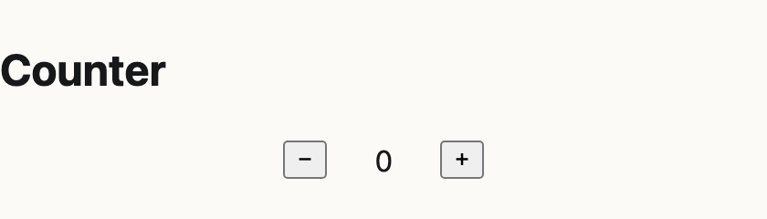
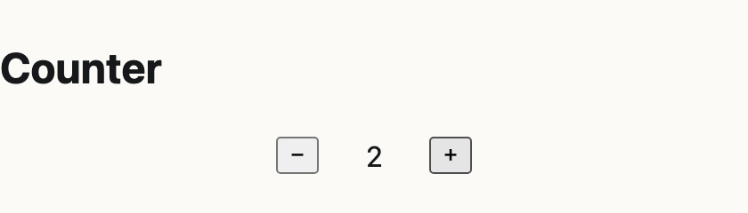
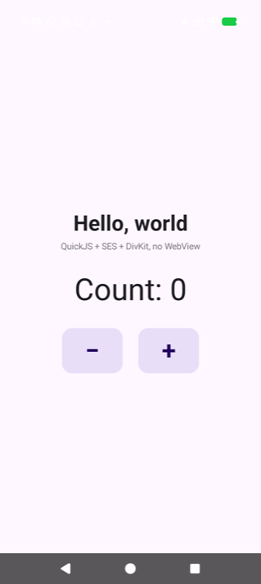
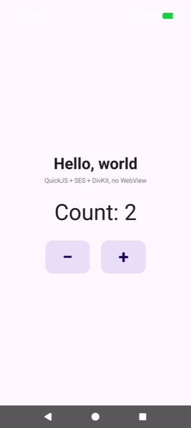
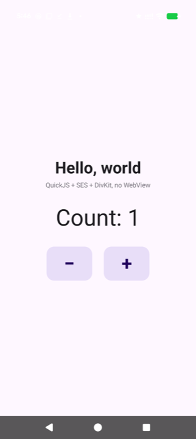
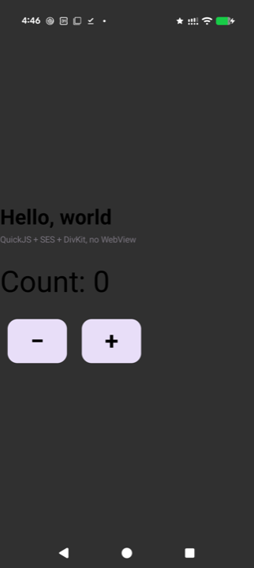
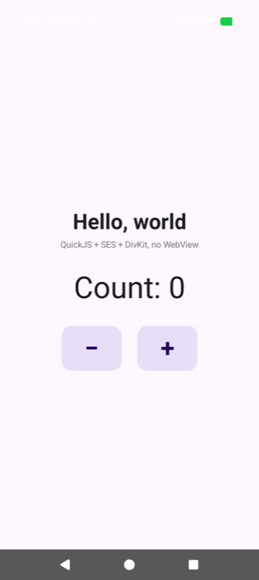

Hello Android
A counter that is one pronto program: the browser runs it in omnishell, and a Pixel 10 Pro runs the same
count.js natively — QuickJS under SES, drawn by DivKit, no WebView — starting from the seed pronto emits.
The same presses give the same number on both.
Turn 5 — the host comes from pronto-plugins
The app moved into bsoneca/pronto-plugins as its example, and its android/ is now generated by
bin/pronto-android: a generic engine that hands the screen every handler and shell.json, Gradle
pinned through mise instead of a wrapper, and this counter's screen.js kept as the app's own. A fresh clone
regenerates it with no drift.
| Verb | Where | Exit |
|---|---|---|
./saytw generate · lint · test | the example in the repo | 0 |
./saytw integrate | the example in the repo | 0 |
./saytw setup@android · build@android | the example in the repo | 0 |
bin/pronto-android, then generate · test · build@android | a fresh clone from GitHub, no tracked file changed | 0 |
Turn 4 — a real pronto app
The Gradle hello world became a pronto app: bootstrapped on pronto 0.14.0 and sayt 0.44.1, with brief, acceptance, ir,
DESIGN and program.cue cut from pronto's idioms to the counter. The Android project moved into
android/, its package renamed to dev.pronto.hello_android, the id the Android host derives from the
app's name. The phone now reads the program's own shell/handlers/count.js and shell/shell.json seed
instead of copies; its @android verbs and toolchain come from bsoneca/pronto-plugins.
Gates
| Verb | Rules | Exit |
|---|---|---|
./saytw generate | omnishell, pronto (minted 1 entity, 2 fields) | 0 |
./saytw lint | caddy, cue, derive, handlers, identity, markup, proto, types, facts | 0 |
./saytw test | battery, i18n, machines, unit | 0 |
./saytw integrate | visual, against the built images | 0 |
./saytw setup@android | android-sdk | 0 |
./saytw launch@android | android: assemble, install, start | 0 |
In the browser — ./saytw launch, then + + −


On the phone — ./saytw launch@android, then + + −



accept-count holds on both: + then − returns the counter to where it was. The phone's view tree holds only
native classes — TextView, LinearLayout, FrameLayout, ViewGroup.
What is not yet pronto's
- The phone's screen is drawn by
android/app/src/main/assets/screen.js, not compiled fromshell/screens/counter.html; pronto 0.14.0 has noandroidtarget. - The engine is a cut-down
HelloEngine, not omnishell's interpreter; the row lives in memory and resets on restart. - SES is a vendored copy of omnishell's
ses.umd.min.js1.15.0. - The web screenshots came from headless Chrome told to accept the local mkcert certificate, which the Mac does not trust.
Turn 3 — the toolchain as a plugin
The JDK, the SDK's cmdline-tools and the setup, build, test and launch
rules moved out of the app into the Android host's declaration, now bsoneca/pronto-plugins. The app holds
what it generates: a .say.json sayt merges with pronto's .say.yaml, and a mise drop-in.
./saytw launch@android built, installed and started the app from it, exit 0.
Turn 2 — pinned toolchain and sayt verbs
Homebrew's global JDK and SDK gave way to mise pins (Temurin 21.0.12+8, android-sdk 23.0, locked), Gradle's wrapper got
its checksum, and ./saytw setup and ./saytw launch@android replaced raw gradlew and
adb; both exited 0.
Turn 1 — a native hello world
pronto's idioms count.js, unchanged, ran in QuickJS under SES on the phone and drew a DivKit card; taps came
back as pronto://event URLs. The first build drew black text on the phone's dark background, left-aligned.


Measured along the way: SES needs a host console and an Iterator.prototype repair on QuickJS
2026-06-04; quickjs-kt needs scripts to end in undefined; omnishell's jessie.js cannot load yet,
for want of URL, TextEncoder, Intl and the other web globals.